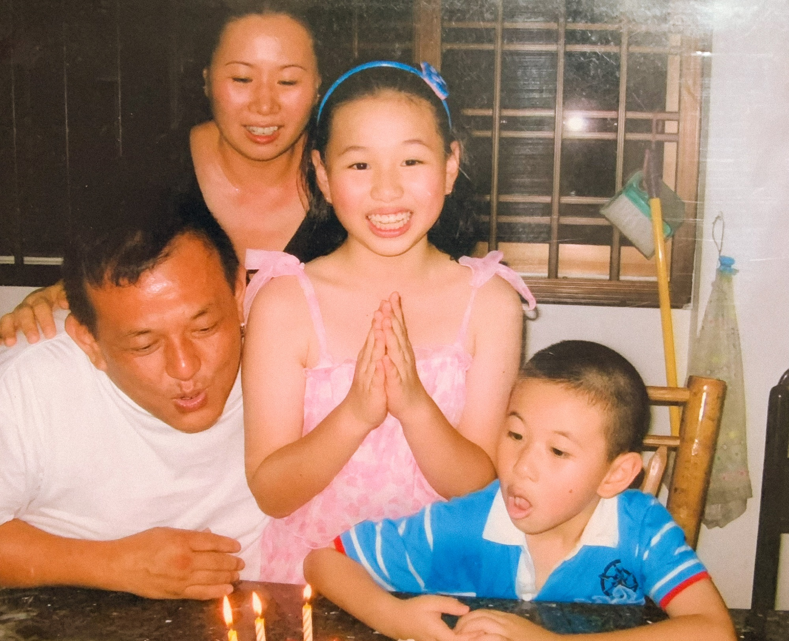
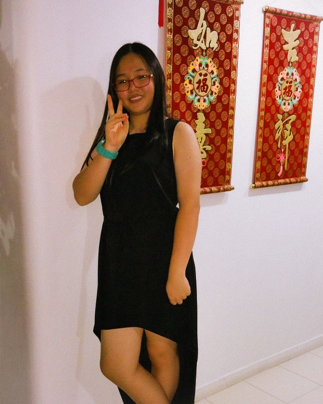
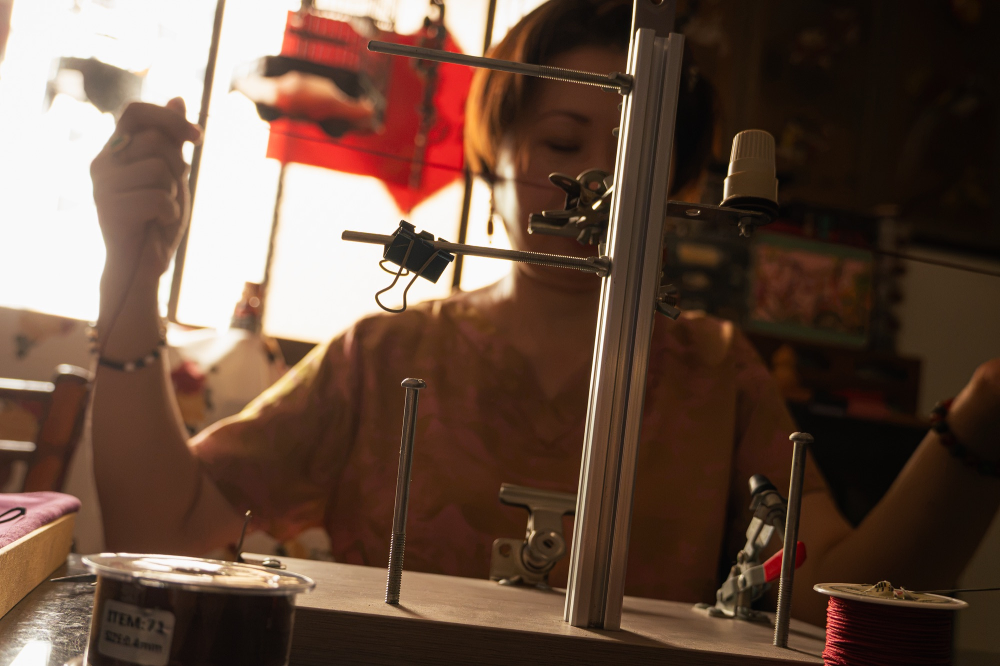
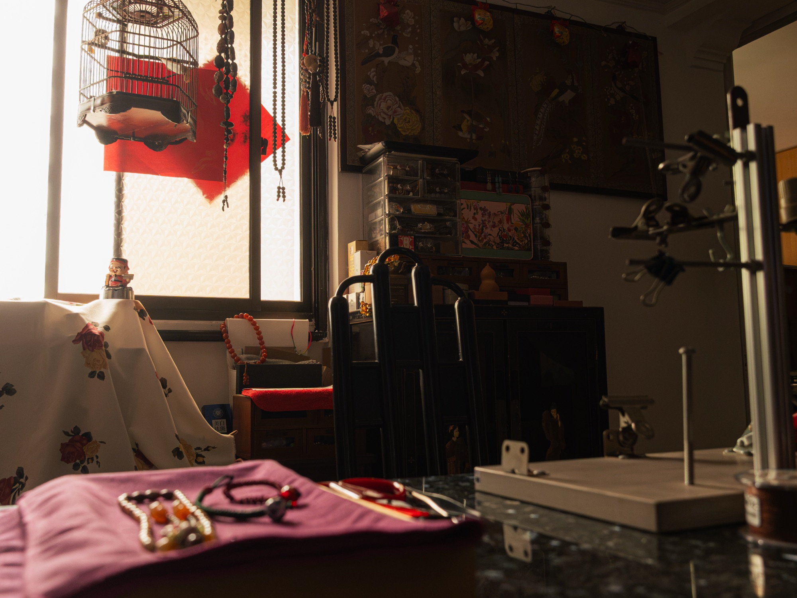
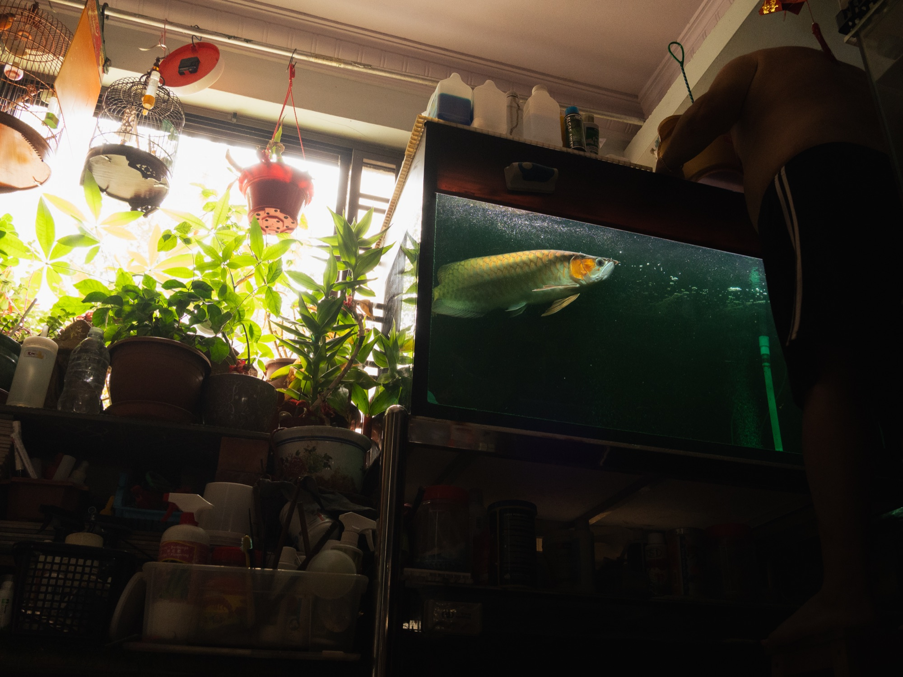
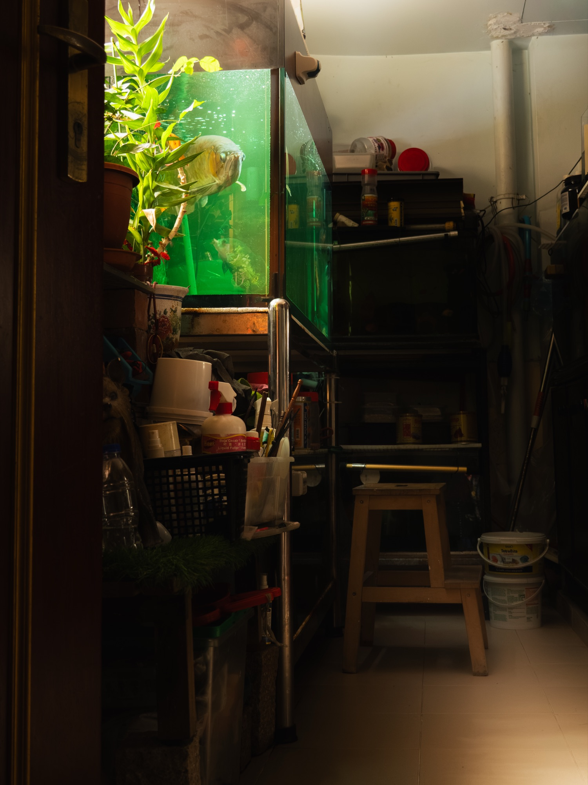
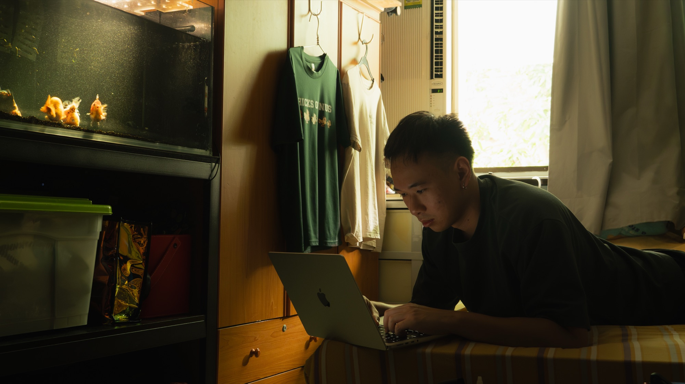
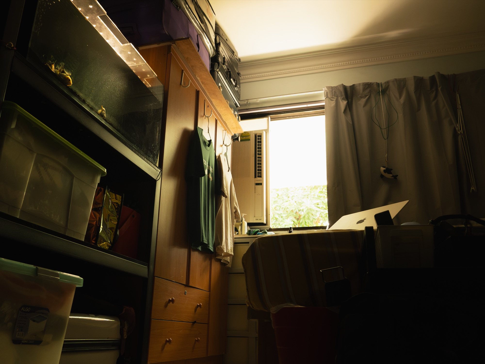
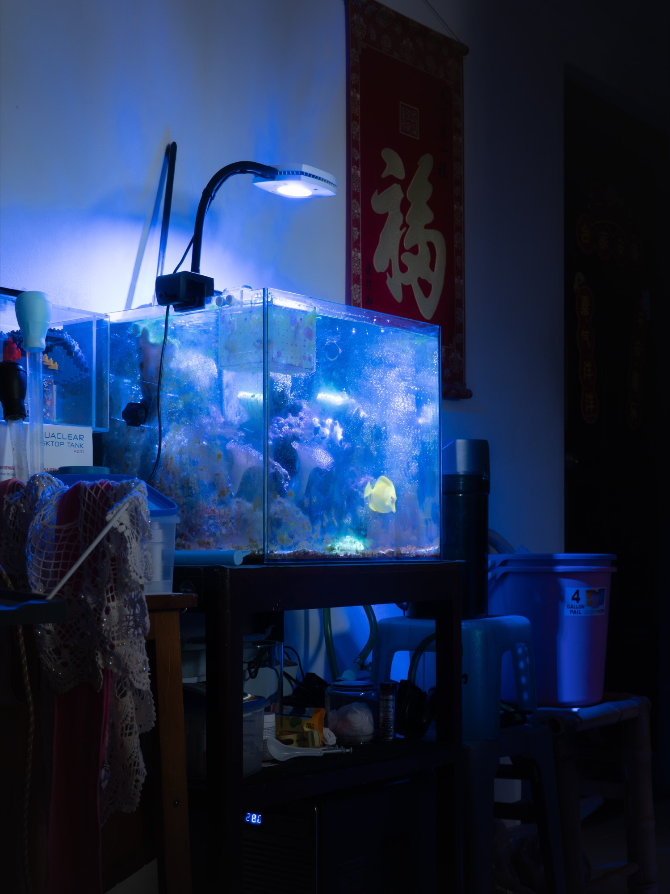

My family shares the same roof, but we do not necessarily share the same spaces within it. Over time, each of us has developed our own routines, interests and personal spaces within the home. Our Corners explores family through these individual spaces, looking at how presence, absence and belongings can reveal the changing structure of a family.

This is my family — dad, mom, sister, me — when we were much younger.

But we grew up, and my sister eventually moved out. Now the house is just left with me, mom and dad.

Mom spends her free time making little crafts like beaded bracelets. She has her own spot at the dining table.



Dad on the other hand, loves rearing fishes. I think me and my sister got that from him too. His spot is at the balcony, where all his plants and aquariums are.

And for me? It's my room.


And for my sister, well… her aquarium now sits in the hallway.